Allows users to create AI-Generated faces based on real images by modifying 4 different parameters.
Challenges users to distinguish fake faces from real faces.
Newly generated faces passing onto the game
AI INVADER acts like a creator, which generates new content, and AI DEFENDER acts like a descriminator. New content is constently passing onto the discriminator along with real training data (ground truth) to be assessed.
AI INVADER acts like a creator, which generates new content, and AI DEFENDER acts like a descriminator. New content is constently passing onto the discriminator along with real training data (ground truth) to be assessed.
Here are the steps a GAN takes: